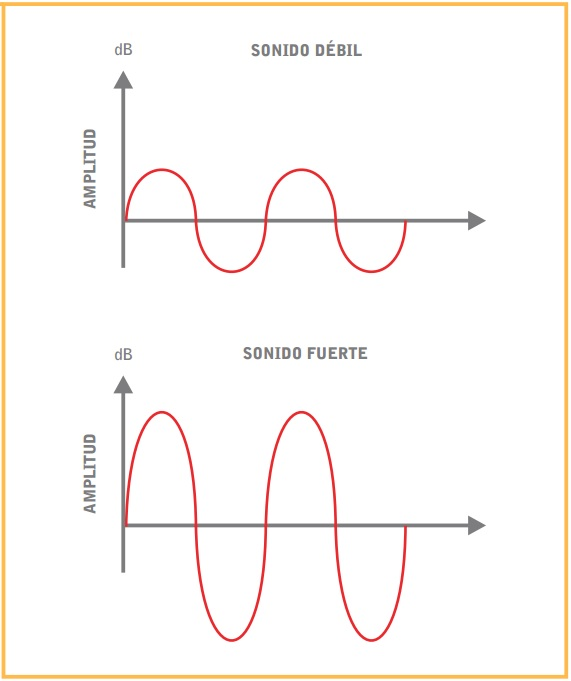
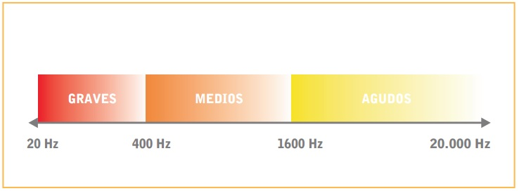

Un formato de archivo de audio es el modo en que se almacenan los datos de un archivo de audio, el formato de audio describe la codificación de dichos archivos. Un archivo de audio es una serie de datos de audio digital que se almacenan en un soporte de datos, y que contienen sonidos codificados. Existe un gran número de archivos de audio, se distingue entre archivos comprimidos y sin comprimir. Estos últimos se dividen a su vez en formato con pérdida y sin pérdida de calidad de audio.
Un archivo de audio es un conjunto de datos de audio digitalizados, que se pueden almacenar y reproducir en diferentes dispositivos, siempre que sean compatibles con dicho formato. Cada formato de audio utiliza una extensión de archivo diferente indicando la codificación bajo la cual fue creado el archivo. Los archivos de audio contienen sonidos digitalizados, como por ejemplo música, voz o similares.
El formato de audio describe el tipo de archivo y proporciona información sobre su codificación. Aunque son muy pocos los formatos de audio que usa una persona del común a diario, lo cierto es que es existe una gran cantidad de formatos, cada uno con sus beneficios y desventajas.
Muchos formatos de codificación disponen de metadatos, es decir, datos acerca de los datos, como la codificación, la frecuencia de muestreo, la tasa de bits, el número de canales, el título de la canción, el nombre del álbum o el intérprete, entre otros.
Los formatos de audio se pueden dividir en comprimidos y sin comprimir, y a su vez los formatos comprimidos se dividen en formatos sin pérdida o con pérdida de calidad.
Comprimidos
Los formatos de audio sin comprimir brindan una gran calidad de sonido, pero suelen ocupar mucho espacio, lo que los hace muy poco prácticos en muchos casos, por ejemplo para usarlos en Internet.
El formato de archivo de audio sin compresión más popular es WAVE, también conocido como WAV, desarrollado por Microsoft e IBM. Al no estar comprimido no tiene pérdida de calidad, por lo que es adecuado para uso profesional, ya que permite calidad CD de audio. Su extensión es .wav.
Sin comprimir
Existe un gran número de formatos de audio con compresión. Los formatos de audio con compresión pueden ser con o sin pérdida. La compresión con pérdida implica siempre pérdida de calidad, por lo que, dependiendo del grado de compresión del archivo, se pueden apreciar diferencias de calidad durante la reproducción.
En los formatos con pérdida, durante la compresión se eliminan elementos que se consideran innecesarios o indetectables para el oído humano, lo que conlleva una pérdida de calidad. Estos formatos pueden comprimir en diferentes tasas de bits, brindando diferentes calidades de sonido. El más popular de estos formatos es el MP3 (MPEG-1 Audio Layer III, extensión .mp3) y lo siguen de cerca el AAC (Advanced Audio Coding, extensión .mp4 o .acc), el WMA (Windows Media Audio, extensión .wma) y el Ogg Vorbis (.ogg).
Un sonido se caracteriza por dos propiedades: la amplitud y la frecuencia.
La amplitud indica la magnitud de las variaciones de presión. Cuanto mayor sea este valor más fuerte será la sensación de sonido que percibimos. Debido a que el rango de amplitudes que el oído es capaz de detectar es muy amplio, se utiliza una escala logarítmica o ‘comprimida’, cuya unidad es el decibelio (dB) para facilitar su valoración.
La mínima variación de presión que el oído es capaz de detectar son cero decibelios (0 dB), y es lo que se considera como umbral de audición.
En el otro extremo, la máxima variación que podemos soportar es de 120 dB, y es lo que se considera como umbral de dolor. A partir de este valor se producen daños irreversibles en el sistema auditivo.
La frecuencia indica la velocidad de las variaciones de presión por segundo y se mide en hercios (Hz), que es el número de variaciones por segundo.
El rango de frecuencias que es capaz de percibir el oído humano se encuentra entre los 20 Hz (20 variaciones por segundo) y los 20000 Hz (20000 variaciones por segundo).
Debido a que este rango es muy amplio se subdivide en tres zonas:
| Nombre completo | Extensión | Compresión | Pérdida |
|---|---|---|---|
| Advanced Audio Coding | ACC | Sí | Sí |
| Free Lossless Audio Codec | FLAC | Sí | Sí |
| Motion Picture Experts Group | MP3 | Sí | No |
| Vorbis | OGG | Sí | No |
| Windows Media Audio | WMA | No | No |